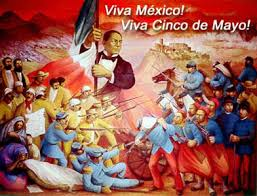
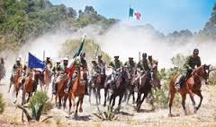
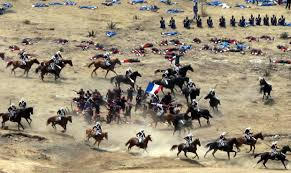
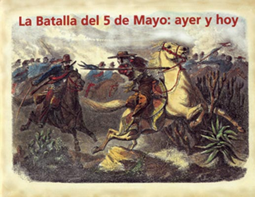

En octubre de 1861, Francia, Inglaterra y Espana suscribieron la Convencion de Londres, en la cual se comprometieron a enviar contingentes militares a Mexico para reclamar sus derechos como acreedores por una deuda que ascendia alrededor de 80 millones de pesos, aproximadamente eran 69 millones para los ingleses, 9 millones para los espanoles y 2 millones para Francia.
La batalla de Puebla fue un combate librado el 5 de mayo de 1862 en las cercanias de la ciudad de Puebla, entre los ejeircitos de laRepublica Mexicana, bajo el mando de Ignacio Zaragoza, y delSegundo Imperio Franceis, dirigido por Charles Ferdinand Latrille, conde de Lorencez, durante la Segunda Intervencion Francesa en Meixico, cuyo resultado fue una victoria importante para los mexicanos ya que con unas fuerzas consideradas como inferiores lograron vencer a uno de los ejeircitos mas experimentados y respetados de su eipoca
Mientras se libraba la batalla, en el Palacio Nacional y en la Ciudad de Mexico en general se vivia un ambiente de tensa espera. Lo ultimo que se sabia de Puebla era el telegrama enviado por Zaragoza hacia las 12:30 del dia, en el que avisaba que el fuego de artilleria de ambos lados habia iniciado. Luego, silencio. Ante la incertidumbre, el gobierno habia hecho salir precipitadamente al general Florencio Antillon al mando de los Batallones de Guanajuato, quedando como guardianes de la capital solo 2,000 hombres del Regimiento de Coraceros Capitalinos y algunos centenares de milicianos pobremente armados. Si las tropas guanajuatenses se perdian, la capital quedaria desprotegida.
os representantes de los tres paises enviaron un ultimatum al gobierno mexicano en el que pedian el pago de sus deudas; de lo contrario, invadirian el pais. Juarez, quien gobernaba a un pais que apenas empezaba a levantarse de la postracion economica, respondio con un exhorto a lograr un arreglo amistoso, y los invito a conferenciar. Acompado ese mensaje con la derogacion del decreto que suspendio los pagos. Al mismo tiempo, en vista de la posibilidad real de una invasion militar que buscara llegar hasta la Ciudad de Mexico, ordeno el traslado de pertrechos y la fortificacion de Puebla, asi como crear una unidad, a la que se designo como Ejercito de Oriente, que fue puesta bajo el mando del general Jose Lopez Uraga. En vista del desempeño deficiente de este mando, fue destituido y en su lugar se designo a Zaragoza, quien dejo el Ministerio de Guerra y se dirigidoa Puebla para organizar la oposicion al avance frances con cerca de 10,000 hombres; cantidad minima si se toma en cuenta el vasto territorio que debia cubrirse


cuando aun se realizaban las negociaciones en Orizaba, llego a Veracruz un contingente militar frances bajo el mando de Charles Ferdinand Latrille, conde de Lorencez, quien relevo en el mando a Jurien de la Graviire y se dirigio a Tehuacan. Tambien llego el general conservador Juan Nepomuceno Almonte, quien de inmediato se proclamo "jefe supremo de la nacion" y empezo a reunir a las tropas conservadoras, remanentes de la Guerra de Reforma, para apoyar a los franceses.
Zaragoza establecio su cuartel a unos cuantos metros de la linea de batalla, donde establecio el plan para la defensa de la plaza (ver tabla superior), que consistio en concentrar los pertrechos en el sur y oriente de la ciudad, esperando evitar que los franceses alcanzaran al area urbana de Puebla. 
El ala derecha mexicana la cubrian las tropas de Oaxaca dirigidas por Porfirio Diaz. El centro de la linea lo ocuparon Felipe Berriozabal y Francisco Lamadrid con las tropas del Estado de Mexico y San Luis Potosi. La izquierda se apoyo en el cerro de Acueyametepec ubicado en el norte de la ciudad y en cuya cumbre se ubicaban los Fuertes de Loreto y Guadalupe, con el general Miguel Negrete a la cabeza de la Segunda Division de Infanteria. La artilleria sobrante la colocaron en los fortines y reductos dentro de Puebla, quedando al mando del general Santiago Tapia


El saldo final de la batalla fue de 476 muertos y 345 heridos del lado francos, asi como 83 muertos, cerca de 131 heridos y 12 desaparecidos para el Ejercito de Oriente. A las 7 de la noche del da 6 de mayo arribaron a Puebla el general Antillon y sus tropas; Zaragoza esperaba un nuevo ataque de Lorencez, pero este, el dia 8 de mayo, dispuso la retirada hasta San Agustin del Palmar, siendo "saludado" por la artilleria republicana y la Banda de Guerra de los Carabineros, quienes tocaron "Escape"